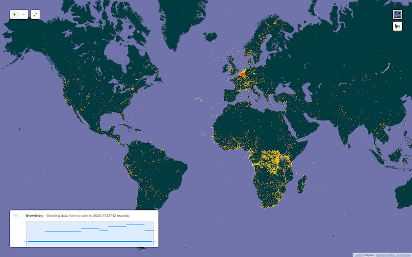
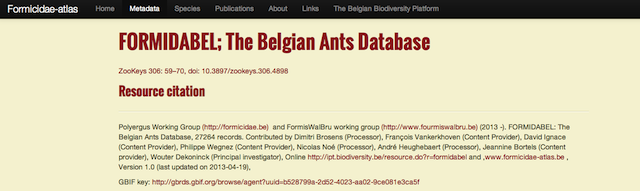
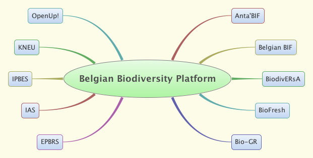

Belgian BIF
André Heughebaert & Nicolas Noé - November 2013
Belgian Biodiversity Platform

Summary
- Participation
- Contribution
- Digitization
- Informatics
- Other activities
Participation - Core
- Feb 2001: Belgium joined GBIF
- March 2005: Hosting GB10 in Brussels
- Feb 2010: Mentoring Project with Mauritania
- July 2010: Data Validation Workshop
by Dr. Arthur Chapman, in collaboration with GBIF France and NlBIF - 2011: Checklists published as Darwin Core Archive
- 2013: Mentoring Project with Togo & Mauritania
- 2011+2013: Nodes Training Events
at GB18 Buenos Aires and GB20 Berlin - April 2014: Hosting Regional Nodes Meeting for Europe
Participation - More
- Anta'BIF (2009-2014): Data Publication + Data Portal on Antarctica
Anton VandePutte, Nabil Youdjou - BioFresh (2009-2013): Data Portal on freshwater, FP7 project
Aaike de Wever, Bos de Busscher, Michel Kapel - Bio-GR (2012): Greater Region Data Portal on protected species
Sylvain Renaudier - Canadensys (2009-2012)
Peter Desmet(ex BBPf member) - NPT (2011) Advisory Group Coordination
Bruno Danis
Participation - Network

Contribution - Data
Contribution - Data
7 Data Publishers, 53 occurrence datasets
5 Mio + records covering 227 countries/territories.
7 checklists with 150.000 records.
Contribution - Belgian Data Portal

Contribution - Scientific Publications
47 Belgian scientific papers (1,572 in total)
in Mendeley's GBIF Public Library.
Contribution - Data Papers
- Landuyt, W.V., Vanhecke, L. & Brosens, D., 2012.
Florabank1: a grid-based database on vascular plant distribution in the northern part of Belgium (Flanders and the Brussels Capital region).
PhytoKeys, 12, p.59-67. Available at: http://www.pensoft.net/journals/phytokeys/article/2849/abstract/ - Danis, B., Jangoux, M. & Wilmes, J., 2012.
Antarctic Starfish (Echinodermata, Asteroidea) from the ANDEEP3 expedition.
ZooKeys, 185, p.73-78. Available at: http://www.pensoft.net/journals/zookeys/article/3078/abstract/ - Brosens D, Vankerkhoven F, Ignace D, Wegnez P, Noé N, Heughebaert A, Bortels J, Dekoninck W (2013)
FORMIDABEL: The Belgian Ants Database.
ZooKeys 306: 59-70. doi: 10.3897/zookeys.306.4898
Digitization - small calls
- 5 calls so far : 2006, 2007, 2008, 2010 and 2012
- 18 funded projects
- 1.5 Mio + records (specimen/observation)
- On average: 15,000€ / project
Digitization - process
- Open to all researchers working at any Belgian institute
- No taxonomical/geographical restrictions or focus
- Selection criteria are:
- Cost efficiency
- Data relevance/usability
- Collaboration amongst research units
Digitization - 5th Digit Call
- Arachnofauna: Spiders Atlas of Belgium
- IFBL: Historical inventory of vascular Plants in Belgium
- EarlyBirds: Historical birds records, citizen science
- IUCN Plants redlists: specimens of endemic plants, Central Africa
Digitization - BRAIN.be
(Belgian Research Action through Interdisciplinary Networks)
- Recurrent framework programme for research
- 2012-2018 Programme organised around 6 themes:
- Axis 1: Ecosystems, Biodiversity, Life History
- ...
- Axis 6: Collections Management
- Platform will help/support publishing of biodiversity data
Informatics
- Low turn-over team, 2.5 FTE IT experts
- Open Source Software centric
- Programming: Python, Ruby, SQL, ...
- Framework: Django, Rails, home made CMS, ...
- Web: HTML5, CSS, JSON, Javascript
- Postgres Database
- GIS: OpenLayers, Leaflet, Geoserver
- Data Publication: IPT, TapirLink, BioCASe, Digir
- Git repository, Agile methodologies
IT Support
Aside GBIF Activities, we also offer IT support to our Scientific community.
e.g. FORMIDABEL (Formicidae Atlas): Occurrence dataset + Data paper + Customized website
+ conferences Websites, support to spin-off projects,...
Other Platform Activities
Apart from being the National GBIF Node,
the Platform acts as EPBRS Secretariat, BiodivERsA Secretariat, IPBES, Belgian Science Policy Interface, ...
We coordinate Communities of Practice:
- Invasive Alien Species
- Ecosystem Services
- Freshwater Assessment
Broader Platform Context
Platform Staff
Kristina Articus,
Estelle Balian,
Angélique Berhault,
Dimitri Brosens,
Julien Cigar,
Hilde Eggermont,
André Heughebaert,
Hans Keune,
Nicolas Noé,
Sonia Vanderhoeven,
Aline Van Der Werf
THE END
by André Heughebaert & Nicolas Noé
Crafted with reveal.js